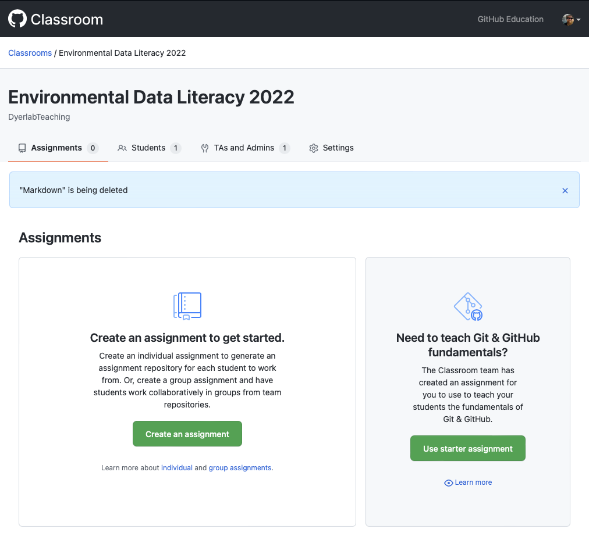
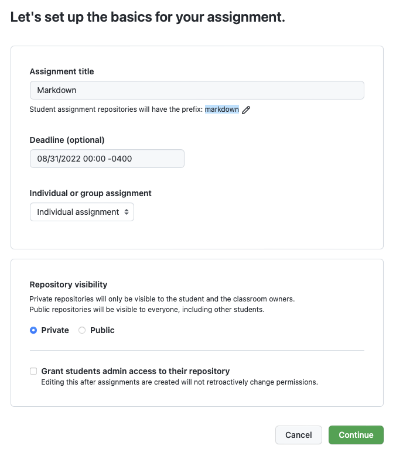
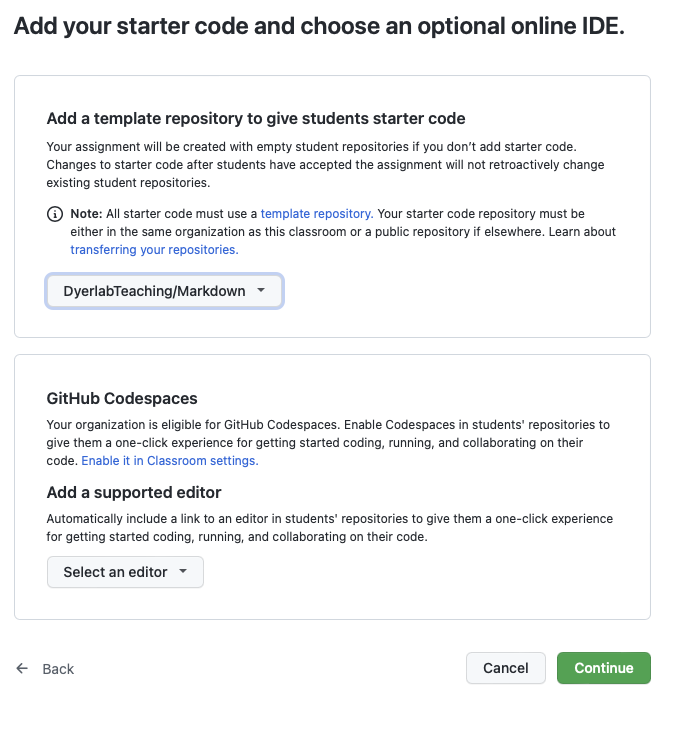
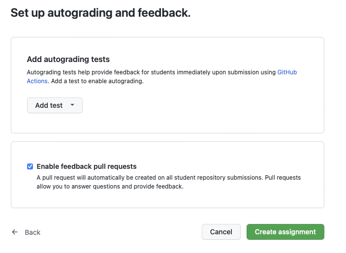
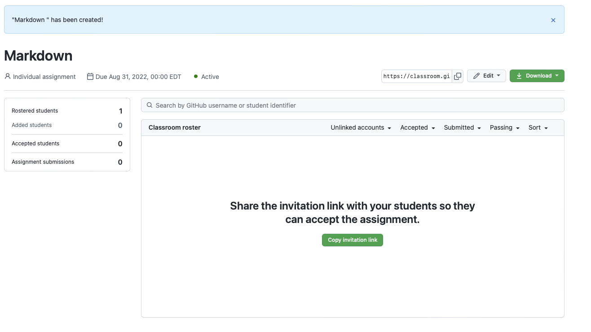

Assignments & Feedback
Adding Assignments
To add a new assignment, follow these steps.
- Go to the assignments page and click on Create an Assignment (or “New Assignment” as a button if you already have some in the class).

- Set up the basic information about the assignment.

- Select a repository to be used as the base repo for this assignment. If you have not already done so, it will prompt you to make the assignment repository a “template”.

Finalize it by setting up the ability to submit feedback via pull requests. At some point it would be good to set up some auto grading tests, but I’ll have to come back to that later.

The next page will show the assignment in classroom. The link needs to be shared with the students so they can “Accept” the assignment and clone their own copy.

You now have an assignment uploaded and ready for deployment.
Return to the GitHub Repository.